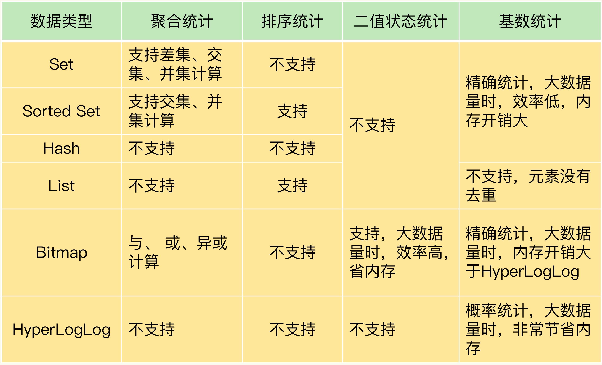

Redis 集合特点就是一个键对应一系列的值，适合存储一个 key 对应一个数据集合，但是集合的统计则需求不同。集合类型常见的 4 种统计模式，聚合统计、排序统计、二值状态统计和基数统计。
聚合统计
统计多个集合元素的聚合结果，包括交集、并集、补集。Set的集合运算，计算复杂度高，在数据量较大的时候，会导致Redis阻塞。可以选择一个从库负责计算，也可以返回客户端后在进行计算
排序统计
List 和 Sorted Set 是有序的，前者是按插入顺序排序，后者是按照权重排序
二值统计
集合元素的值只能取 0 或者是 1 ；Bitmap 本身是用 String 类型作为底层数据结构实现的一种统计二值状态的数据类型，Bitmap 提供了 GETBIT/SETBIT 操作，使用一个偏移值 offset 对 bit 数组的某一个 bit 位进行读和写。不过，需要注意的是，Bitmap 的偏移量是从 0 开始算的，也就是说 offset 的最小值是 0
基数统计
统计一个集合中不重复元素个数；HyperLogLog 是一种用于统计基数的数据集合类型，它的最大优势就在于，当集合元素数量非常多时，它计算基数所需的空间总是固定的，而且还很小
总结
